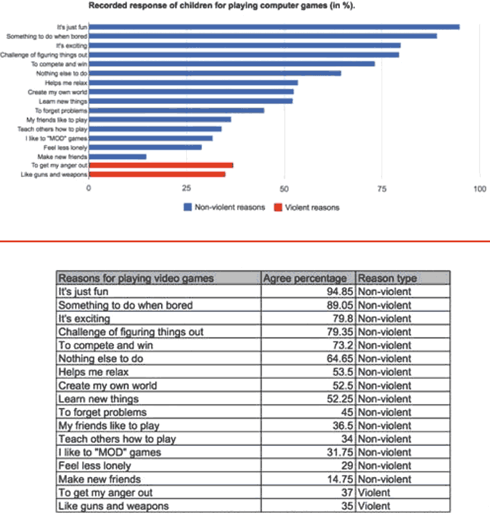

Data presented in charts are more persuasive than data presented in tables, when viewers do not have strong opinions on the subject matter.
In a study on the persuasiveness of data visualization, the research team investigated how certain visualization types and personal attributes of the reader affected message credibility.
The team measured initial attitude among study participants before and after the exposure to the charts or tables. The study used topics that do not evoke extreme initial attitudes in the population and classified the participants according to their initial attitudes toward the topic as positively, negatively, or neutrally polarized.
For neutral viewers (people who did not have a strong prior opinion on the issue) charts were more persuasive than tables. Tables, on the other hand, seemed to outperform charts when the participants were negatively polarized (had a strong initial attitude against the persuasive message.) While the statistical significance could only be confirmed for the neutral/weakly polarized user findings, the results clearly suggest that presentation type may have an effect on persuasion and that the effect may be modulated by initial attitude.
Source: The Persuasive Power of Data Visualization, Pandey, et al., 2014
